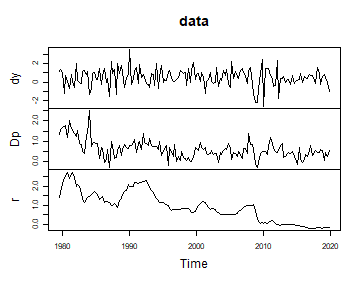
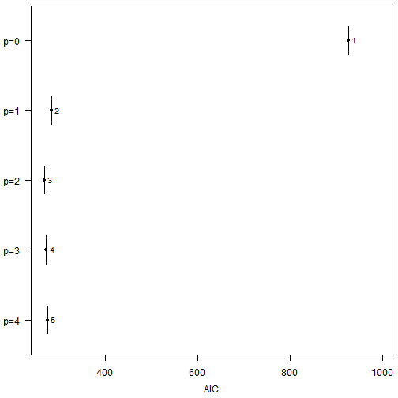
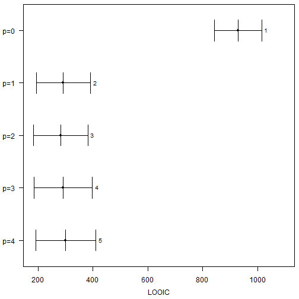
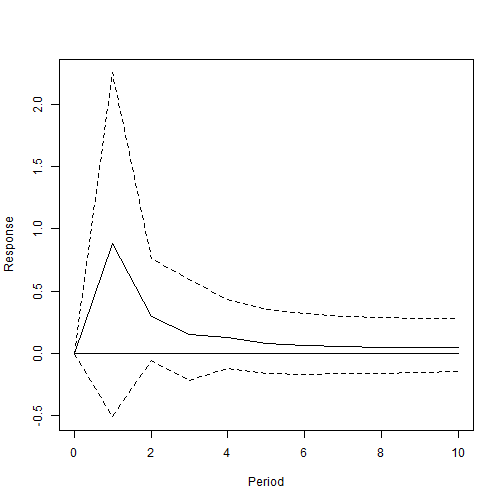

Model Comparison in bvartools
Franz X. Mohr
Source:vignettes/model-comparison.Rmd
model-comparison.Rmdbvartools comes with the functionality to set up and
produce posterior draws for multiple models in an effort to reduce the
time required for this potentially laborious process. This vignette
illustrates how the package can be used to set up multiple models,
produce prior specifications, add initial values, obtain posterior draws
and select the model with the best fit in a few steps.
Data
For this illustration data set at_macrodata is used,
which contains quarterly macroeconomic series of Austria. From its
element domestic, which holds the domestic series, the
growth rate of real GDP (dy), inflation (Dp)
and the short-term interest rate (r) are taken, all in
percent per quarter. The sample ends in 2019Q4, because output growth
moved by ten percent within a quarter in 2020, which would dominate
models with a constant error variance.
library(bvartools)
set.seed(123456) # Set seed for reproducibility
data("at_macrodata") # Load data
at <- at_macrodata[["domestic"]]
# Output growth, inflation and the short-term interest rate in percent
data <- ts.intersect(dy = diff(at[, "y"]), Dp = at[, "Dp"], r = at[, "r"]) * 100
# Use data up to 2019Q4
data <- window(data, end = c(2019, 4))
# Plot
plot(data)
Set up models
Functions create_bvarmodel can be used to obtain a list
of different model specifications. In the following example five models
with an intercept and increasing lag orders are generated.
models <- create_bvarmodel(data, p = 0:4,
deterministic = "const",
iterations = 5000, burnin = 1000)All objects use the same amounts of available observations to ensure consistency for the calculation of information criteria for model selection.
Priors
Function add_priors can be used to produce priors for
each of the models in object models.
models <- add_priors(models,
coef = list(v_i = 0, v_i_det = 0),
sigma = list(df = "k", scale = 0.0001))Initial values
Function add_initial_values can be used to generate
initial values of the Gibbs sampler for each of the models in object
models.
models <- add_initial_values(models)Posterior simulation
Posterior draws can be obtained using function
add_posterior_coefficients.
models <- add_posterior_coefficients(models)Model selection
models <- add_posterior_loglik(models)If function selection_criteria is applied to an object
of class modellist, it produces an object of class
selcritlist. Its elements are of class selcrit
and contain the log-likelihood and the selection criteria of the
respective model, which are calculated from its posterior draws in the
following way:
- Log-likelihood: for each draw and , which is summarised by the mean, the median and the credible band of its draws;
- Akaike information criterion: ;
- Bayesian information criterion: ;
- Hannan-Quinn information criterion: ;
- Widely applicable information criterion: , where is the log-likelihood of period in draw ;
- Leave-one-out information criterion: , where the weights reweight the posterior towards the one that has not seen period .
The number of estimated parameters is
where is the number of endogenous variables and the lag order of the model. If exogenous variables were used is the number of stochastic exogenous regressors and is the lag order for those variables. is the number of deterministic terms. The first term of counts the coefficients of all equations and the second the free elements of the covariance matrix of the error term.
is the deviance of the model at its point estimate. AIC, BIC and HQ correct the deviance of a fitted model for the optimism of having fitted it, so it is the deviance at the point estimate that their penalties belong to. The mean of the deviance over the posterior is the larger quantity, by about the effective number of parameters, and adding a penalty to it would charge the complexity of the model a second time. is therefore the deviance at the posterior mean of the parameters, obtained by evaluating the log-likelihood of the model once at that point. Since AIC, BIC and HQ are functions of the data and the estimator rather than parameters with a posterior, they are reported without a credible band; the bands of WAIC and LOOIC are normal intervals built from their standard errors.
Textbook presentations state these criteria in a form that is divided
by
and that drops every term which does not depend on the lag order. The
AIC in Lütkepohl (2006), for example, is
.
Evaluated at the maximum likelihood estimates the above formula reduces
to
times that expression plus terms that are constant in
,
so the two rank a set of lag orders in the same way, although their
values are on different scales. Both require that all models are
estimated on the same sample. create_bvarmodel ensures this
for a vector of lag orders by trimming the data by the maximum lag. If
models from separate calls are combined, function
align_model_obs restricts them to the observations they
have in common.
Which criterion to reach for depends on the models that are compared. A count of parameters describes a model with constant coefficients and a weak prior, which is the case AIC, BIC and HQ are derived for and the one of this vignette. It does not describe a model whose coefficients or variances follow a state equation, where the prior on the state variances decides how much of the nominal freedom is used, and it does not describe a shrinkage prior, which buys back degrees of freedom that does not see. WAIC and LOOIC penalise by the flexibility the fit actually used and remain defined in those cases.
selcrit <- selection_criteria(models)Method print.selcritlist gives a table with model
selection criteria for each model
selcrit
#>
#> ------------------------------------------
#> In-sample
#> ------------------------------------------
#>
#> Log-likelihood
#>
#> Mean Median Quantile (2.5%) Quantile (97.5%)
#> Model 1 -458.4 -458.1 -463.5 -455.3
#> Model 2 -133.1 -132.8 -140.0 -128.1
#> Model 3 -121.4 -121.1 -129.4 -115.1
#> Model 4 -118.9 -118.5 -128.3 -111.6
#> Model 5 -115.7 -115.3 -126.4 -107.0
#>
#>
#> Akaike Information Criterion (AIC)
#>
#> Mean Median Quantile (2.5%) Quantile (97.5%)
#> Model 1 926.0 926.0
#> Model 2 284.3 284.3
#> Model 3 269.8 269.8
#> Model 4 273.5 273.5
#> Model 5 275.8 275.8
#>
#>
#> Bayesian Information Criterion (BIC)
#>
#> Mean Median Quantile (2.5%) Quantile (97.5%)
#> Model 1 953.5 953.5
#> Model 2 339.4 339.4
#> Model 3 352.5 352.5
#> Model 4 383.8 383.8
#> Model 5 413.6 413.6
#>
#>
#> Hannan-Quinn Criterion (HQ)
#>
#> Mean Median Quantile (2.5%) Quantile (97.5%)
#> Model 1 937.2 937.2
#> Model 2 306.7 306.7
#> Model 3 303.3 303.3
#> Model 4 318.3 318.3
#> Model 5 331.7 331.7
#>
#>
#> Widely Applicable Information Criterion (WAIC)
#>
#> Mean Median Quantile (2.5%) Quantile (97.5%)
#> Model 1 928.9 928.9 842.0 1015.7
#> Model 2 292.2 292.2 193.3 391.1
#> Model 3 281.9 281.9 182.9 380.9
#> Model 4 290.4 290.4 184.9 395.9
#> Model 5 298.5 298.5 189.1 408.0
#>
#> Periods with a pointwise log-likelihood variance above 0.4, which makes the correction of WAIC unreliable, in models 1 (7), 2 (14), 3 (22), 4 (32), 5 (35).
#>
#>
#> Leave-One-Out Information Criterion (LOOIC)
#>
#> Mean Median Quantile (2.5%) Quantile (97.5%)
#> Model 1 928.9 928.9 842.0 1015.8
#> Model 2 292.5 292.5 193.5 391.5
#> Model 3 282.9 282.9 183.7 382.1
#> Model 4 292.0 292.0 186.0 398.1
#> Model 5 301.0 301.0 191.0 411.1
#>
#> Influential periods, whose importance sampling is unreliable, in models 3 (1), 4 (1), 5 (2), counted as a Pareto k above 0.7.Method plot.selcritlist plots the criteria of the models
against each other. The log-likelihood is drawn with the credible band
of its draws, WAIC and LOOIC with an interval built from their standard
errors, and the criteria that count parameters as single values.
plot(selcrit, criterion = "AIC")
plot(selcrit, criterion = "LOOIC")
pos <- choose_best_model(selcrit, criterion = "AIC")
pos
#> [1] 3AIC, HQ, WAIC and LOOIC have their lowest value for the model with
.
BIC prefers the model with one lag: with 158 observations
is about 5, which is more than twice the 2 of the AIC, and nine
additional coefficients for a second lag are more than the gain in fit
pays for at that price. The model without lags comes last by a wide
margin under every criterion, since the short-term interest rate is
highly persistent. The intervals of WAIC and LOOIC overlap for all
models with lags, however, so the data do not rank them decisively. The
table also points out periods whose log-likelihood varies strongly
across the draws, and that number increases with the lag order. The
third element of models is used for further analysis.

Citing bvartools
If you use bvartools in published work, please cite it.
citation("bvartools") prints the reference, and the package
has the DOI 10.5281/zenodo.22736604,
which always resolves to the latest archived version.